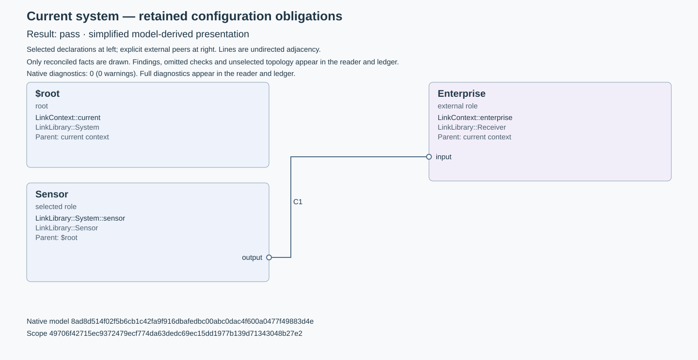

Result: pass. Simplified model-derived presentation of selected native declarations and binary connection adjacency.
The diagram shows reconciled selected roles and explicit external peers. Ordinary connections are undirected; their placement does not establish data direction, a vendor protocol, execution, installation, or a complete architecture. Unreconciled required checks and native topology outside the retained scope remain listed below. Open alternatives are separate from current selections.
Editable SVG · Source and view ledger

| Role ID | Kind | Native declaration | Direct type | Selected parent |
|---|---|---|---|---|
| $root | root | LinkContext::current | LinkLibrary::System | current context |
| Enterprise | external role | LinkContext::enterprise | LinkLibrary::Receiver | current context |
| Sensor | selected role | LinkLibrary::System::sensor | LinkLibrary::Sensor | $root |
| Connection ID | Native connection | Endpoint A | Endpoint B |
|---|---|---|---|
| C1 · DataLink | LinkContext::dataLink | SensorLinkLibrary::Sensor::outputFeature path: LinkContext::current / LinkLibrary::System::sensor / LinkLibrary::Sensor::output | EnterpriseLinkLibrary::Receiver::inputFeature path: LinkContext::enterprise / LinkLibrary::Receiver::input |
Native diagnostics: 0 (0 warnings). Full diagnostics appear in the reader and ledger. These diagnostics retain their native severity and do not change the retained-scope result by themselves.
Model: 8ad8d514f02f5b6cb1c42fa9f916dbafedbc00abc0dac4f600a0477f49883d4e
Scope: 49706f42715ec9372479ecf774da63dedc69ec15dd1977b139d71343048b27e2